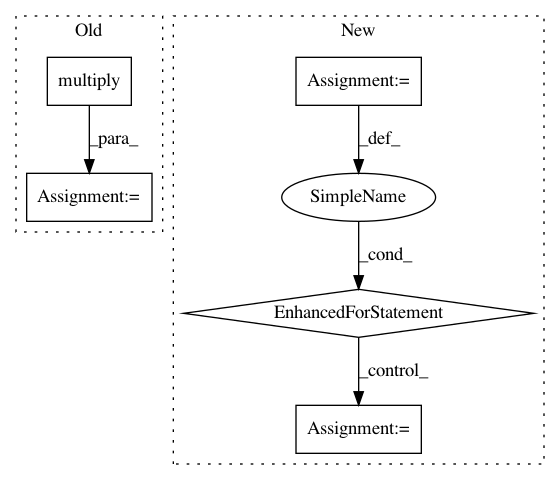

0e17f47e9a4920e276bb61b60d6de16264bc6bcf,pythonds/util/prob_functions.py,,entropy_func,#Any#Any#Any#,68
Before Change
supports[supports < 0] = 0
is_correct[is_correct == 0] = -1
ent = 1 - ((1/np.log(n_classes)) * np.sum(np.multiply(supports, np.log(supports)), axis=1))
C_src = np.multiply(ent, is_correct)
return C_src
After Change
B. Antosik, M. Kurzynski, New measures of classifier competence – heuristics and application to the design of
multiple classifier systems., in: Computer recognition systems 4., 2011, pp. 197–206.
n_samples = is_correct.shape[0]
if n_samples != supports.shape[0]:
raise ValueError("The number of samples in X and y must be the same"
"n_samples X = %s, n_samples y = %s " % (n_samples, supports.shape[0]))
supports[supports > 1.0] = 1.0
supports[supports < 0.0] = 0.0
C_src = np.zeros(n_samples)
for index in range(n_samples):
C_src[index] = (1.0/np.log(n_classes)) * (entropy(supports[index, :]))
C_src[index] += ((2 * is_correct[index]) - 1)
return C_src
def ccprmod(supports, idx_correct_label, B=20):
In pattern: SUPERPATTERN
Frequency: 3
Non-data size: 5
Instances
Project Name: scikit-learn-contrib/DESlib
Commit Name: 0e17f47e9a4920e276bb61b60d6de16264bc6bcf
Time: 2017-12-29
Author: rafaelmenelau@gmail.com
File Name: pythonds/util/prob_functions.py
Class Name:
Method Name: entropy_func
Project Name: f90/Wave-U-Net
Commit Name: fe50c52a31b3231a1777f14eb6131a819f082fc8
Time: 2019-01-24
Author: daniel@dstoller.net
File Name: Models/UnetSpectrogramSeparator.py
Class Name: UnetSpectrogramSeparator
Method Name: get_output
Project Name: danforthcenter/plantcv
Commit Name: 3c8df2fc218bd42544ac0eebb8dbfc6724c27a14
Time: 2019-06-06
Author: noahfahlgren@gmail.com
File Name: plantcv/plantcv/analyze_nir_intensity.py
Class Name:
Method Name: analyze_nir_intensity